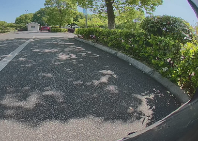
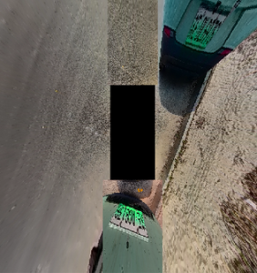
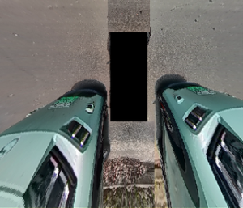
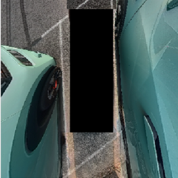
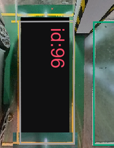
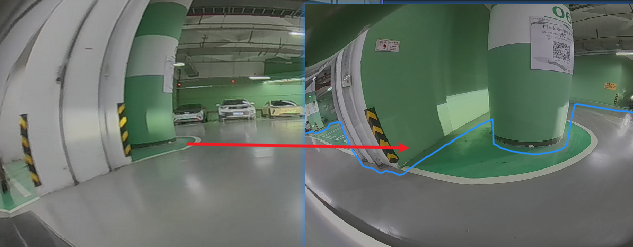
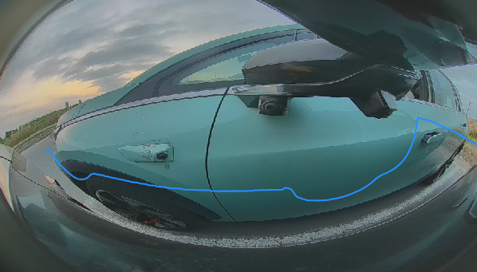

BEV FreeSpace APA bottom test 2024.06.15
Purpose
In order to ensure that the 630 Bev FreeSpace can be successfully closed into the main branch, it is necessary
Require
Test the record package needs to add all VIPER FreeSpace Topic, the USS adds a whitelist
If you find that the incoming failure is found in the test, the brake stops, the dwarfing failure, and the attitude of the posture, you can build a Sub Task ticket. Please be similar to the normal TR ticket explanation: stickers, questions moments, problems explain.
Please record in this task's sub task CNWVIII-105643 - Jira issue doesn't exist or you don't have permission to view it.Scenes Require and Focus on Content are as follows:
|
Parking space |
Parking Space size |
Scene characteristics |
Focus on content |
Exemplary example |
|
Horizontal fusion parking space |
+1.0m |
One side of the road+shrub bush |
The distance from the left or right, the distance from the road along the road (pay attention to accuracy and stability) |
 |
|
Horizontal space parking space 10 |
0.8m |
On the edge of one side, two -ends obstacle car |
The detection accuracy and stability of the rear of the car's front car |
 |
|
Vertical space Parking Space 10 |
+0.8m |
There are obstacles on both sides |
During the entire Guidance process, the stability of the outline detection of the obstacles on both sides |
 |
|
Parking Space 10 |
+0.7m |
Bar obstacle vehicles on both sides |
During the entire Guidance process, the stability of the outline detection of the obstacles on both sides |
 |
|
Obstacles of blind spots nearby Vertical parking space, 10 each |
+0.8m |
Ultra -closer pillar |
Throughout the process, the integrity of the column contour |
 |
|
+0.8m/+1.0m |
Ultra -near cylindrical |
Throughout the process, the integrity of the column contour |
 |
|
|
+0.8m |
Ultra -near -distance obstacle car |
Actual obstacle contour accuracy |
 |
Refer to the current BEV FS TR classification: 2.5D FreeSpace Tr Long_term+BEV FS Summary